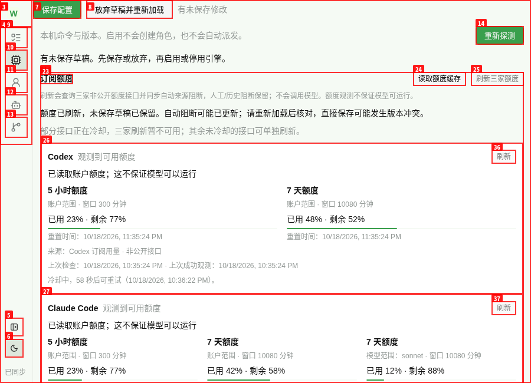
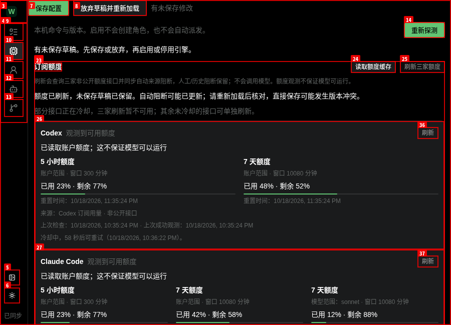
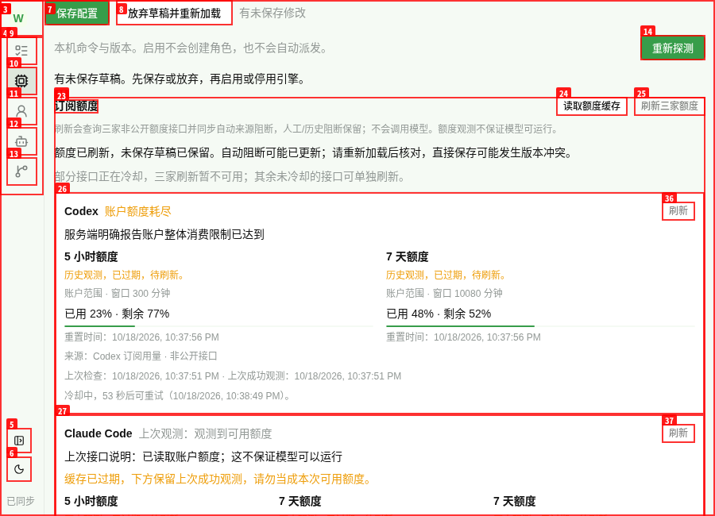

2026-10-19 UTC。真实 built CLI、真实账户 GET 与隔离 fixture 分开记录；未调用模型。机器结果 · 资源与清理
冻结 111 个文件，验收窗口及归档前两次 hash 一致；资源释放后 README 文档发生变化，src/tests/dist 仍一致，已交 Owner 核对文档映射（末次核验）；aggregate 599206dfb7e2350a627c53e2f4e3edef3013e5493247fcc36f71e8fb1189b8ec。冻结清单 · typecheck、229/229 tests、build 日志。本报告只证明本次额度范围，不替代旧外部 Owner 验收。
实际地址 http://127.0.0.1:37539。独立 data-dir，真实 built CLI 唯一一轮 refresh {} 发出三固定 GET，各 1 次且均 HTTP 200；jsonl 冷却重复不再访问供应商。原生三家 auth 与正式 policy 内容前后均未变，未保存 token、账号、原始响应或敏感指纹。
| 接口读取 | 规范化观测 | 判断边界 |
|---|---|---|
| Codex：通过，200 | 账户 7 天已用 25%，available | 不证明模型可执行 |
| Claude：通过，200 | session/weekly 范围未确认，unknown | 账户可用性仍未知，未猜测 surface |
| Grok：通过，200 | 账户 7 天已用 100%，exhausted | 仅独立策略新增自动 Grok 阻断 |
三次 GET 元数据 · CLI 规范化结果 · auth/正式 policy 不变 · 真实页面 DOM
实际地址 http://127.0.0.1:34967。fixture 只在 QuotaProber 内部注入假凭据与受控供应商响应；source runtime、HTTP、同源 RPC、domain、normalizer 与 built renderer 均真实。没有 fake window.weaver、RPC stub 或业务源修改。fixture 源码
| 验收项 | 结果与证据 |
|---|---|
| 初始未知、缓存读取、CLI 格式 | 通过；未知不按 0，get 零供应商 HTTP；get/refresh 的 json/jsonl/text 均实际调用。初始 · CLI |
| 全刷新/单刷新 loading 与冷却 | 通过；busy 禁用、独立接口刷新、60s/Retry-After 后恢复，重复不增 HTTP。全刷 · 单刷 |
| 百分比、周期、重置、来源与作用域 | 通过；23% 已用/77% 剩余、5 小时/7 天/月度、模型范围与未知产品范围、非公开来源可见。DOM |
| 401/429/500 与缓存恢复 | 通过；登录指引、限流冷却、暂时不可用均保留历史观测，冷却后人工恢复。401 · 429 · 500 · 恢复 |
| 本地 aging 与整体限制 | 通过；窗口 reset 本地转 stale；5.2s 内 provider 9→9、quota RPC 10→10。global restriction 不因旧窗口 reset 释放，自动 block 无 release_at，人工 block 保留。计数 · 策略 · DOM |
| 未保存草稿与并发策略更新 | 通过；等待上限 17 保留，后台自动 block 更新后保存冲突仍保留草稿。冲突 · 草稿 |
| 真实 RPC 网络故障 | 通过；仅 abort 同源请求模拟断网，缓存未丢，显式重试恢复。失败 · 恢复 |
| 900×650 亮/暗布局 | 通过；app 满视口，main 844×650，scrollWidth=900，无横向溢出。测量 |
额度本地 timer 未发 RPC/HTTP；工作台既有 sync.status 轮询独立存在。浏览器实测窗口 reset aging；5 分钟 TTL 使用项目测试覆盖，未再等待 5 分钟实机。
浅色 900×650：

深色 900×650：

整体账户限制在窗口过期后仍保留：

正常交互 console 为空，未捕获 page errors 为空；两个独立 origin 的 favicon 404 保留。主动 abort 产生的预期网络错误单列，不冒充零错误。所有 11 组 bh 采证 artifact_errors=[]。最终 console · page errors。真实 Claude 作用域未知；不以额度观测保证模型可运行。
自有两个服务 scope 与 hidden Herdr session 均 inactive / not-found，37539 与 34967 端口不可连接，fixture PID 已消失；浏览器已 close、任务 profile 已删除，自有 r/f/browser 临时现场已回收。Owner 的任务根及日志保留，正式数据、原生 auth 与其他服务保留。精确资源 JSON · scope 核验 · 证据敏感值内存比对零命中。报告已由真实 Chrome 直接打开，600px 无横向溢出，全部本地附件与图片可达。
临时 .ts fixture 被 tsx 按 CJS 处理，改 .mts 后启动。首次恢复点击早于 Retry-After 截止，disabled 且零 HTTP，截止后重试成功；续脚本漏局部 cli 变量，补齐后完成余项。这些只影响验收脚本，未改产品源或预期；原始首次冷却 DOM 保留。